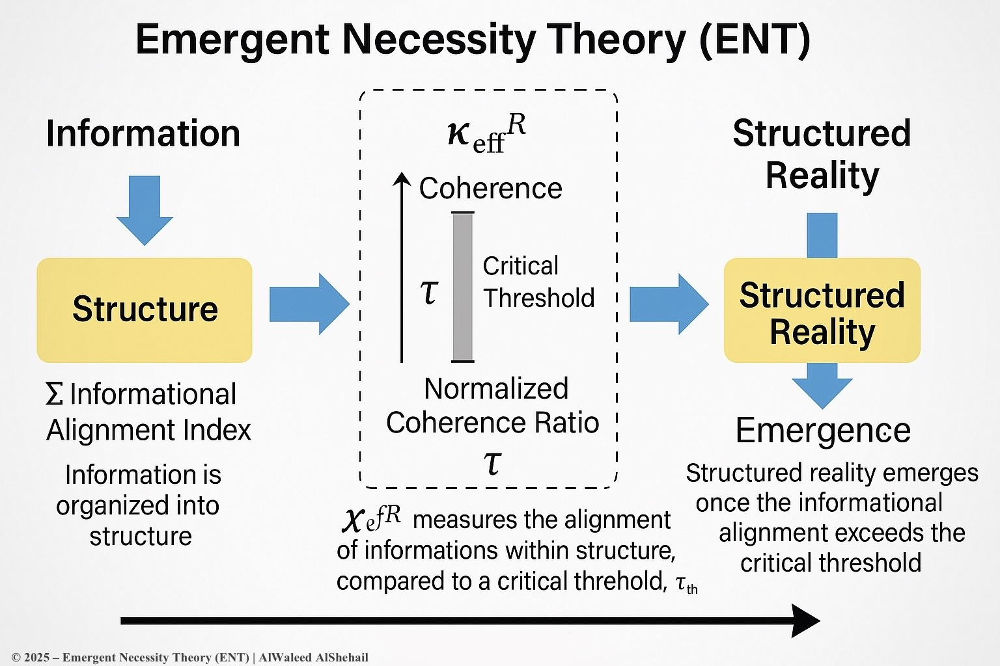

What Is ENT?
Emergent Necessity Theory (ENT) proposes that structure and order in complex systems emerge not randomly, but as a mathematical necessity once a system's internal coherence reaches a universal threshold.
ENT bridges domains — from physics and neuroscience to AI and symbolic reasoning — using the same underlying principle: coherence leads to emergence.
✅ What's New in v3:
- κR (Resilience Ratio) universal calibration band defined: 1.15 ≤ κR ≤ 1.32
- Updated τ(t) coherence function with normalized syntactic entropy costs
- AEFL engine specification for tracking symbolic recursion
- Cross-domain validation: Quantum, Neural, AI, and Cosmological Simulations
The Core Equation
The universal coherence metric is defined as:
τ = (∑ I(xᵢ; xⱼ) − E(X)) / E(X)
Where:
- I(xᵢ; xⱼ) = Mutual information between subsystems
- E(X) = Entropy of the global system
- τc = Critical threshold value (typically τ = 1.5 in test systems)
When τ ≥ τc, organized structure emerges as a necessity — not probability.
Resilience Index
Hysteresis-corrected resilience index:
κR^eff(t) = (1/Δ) ∫[t-Δ to t] κ_inst(u) du
Simulation Results
Simulations show how ENT predicts phase transitions, quantum stability, vacuum selection, and symbolic integration. Domain-specific emergence thresholds confirmed:
- QAOA: τₚ = 1.5, κR = 1.32
- EEG Recovery: τₚ = 0.5, κR = 1.18
- LLM Symbolic Drift: τₚ = 0.6, κR = 1.02
- String Vacua Stability: τₚ = 1.8, κR = 1.01

Resources & Links
🧠 Ethical and Scientific Integrity:
- ENT does not claim sentience detection or metaphysical truth
- All metaphysical interpretations rejected — ENT is structural, not ideological
- AEFL and SCQ are not diagnostic tools, but symbolic tracking metrics
- ENT encourages domain-unifying falsifiability, not theoretical supremacy
Papers & Documentation
- Primary Zenodo Paper (2025)
- An Emergent Necessity Theory: A Universal Coherence Threshold for Structured Reality
- Full ENT Wiki
- MUES Engine